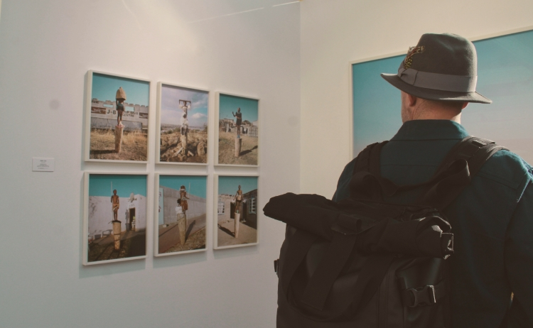

Activités
L'association propose à ces adhérents plusieurs types d'activités. Libres à chacun de participer à celle qui l'intéresse. Cette page permet de lister l'ensemble de ces activités.

Parce que la connaissance de ce qu'on fait les photographes depuis l'invention de
la photographie, de ce qu'on a été dit ou écrit par des philosophes, des
sociologues, des photographes ou d'autres, peut permettre de mieux appréhender
ce médium, des conférences sur la photographie sont organisées régulièrement.
Un programme est établi chaque année, il est modifié toute l'année par des ajouts
liés à l'actualité.
2019-2020
Cycle de conférences-rencontres intitulé "La ville racontée par les
photographes" avec pour invités :
Emmanuelle Blanc - Stéphane Couturier - Frédéric Delangle - Gilbert
Fastenaekens - Geoffroy Mathieu - Cyrille Weiner
Ces conférences ont lieu au FRAC Franche-Comté, à l'ISBA, à la Maison de
l'Architecture entre novembre 2019 et avril 2020.
Vous pouvez retrouver l'ensemble des conférences sur la page agenda.
Dès sa création Photographie Besançon Les Amis s'est donné comme objectif de
favoriser la création d'un lieu pour la photo.
C'est la raison pour laquelle Photographie Besançon Les Amis a organisé, le lundi
20 janvier 2020, une réunion où ont été conviées toutes les personnes intéressées.
38 personnes étaient présentes
Des groupes de réflexion ont été constitués sur les thématiques suivantes :
Une liste de diffusion reliant les participants au projet existe, les personnes
souhaitant participer au projet et connaître son avancement, peuvent s'inscrire à
cette liste en envoyant un mail à : centre-photo@photographie-besancon.fr en
indiquant leur identité, les raisons pour lesquelles elles souhaitent recevoir les
infos de cette liste de diffusion. Un mail leur sera envoyé pour qu'elles s'inscrivent.
Vous pouvez retrouver l'ensemble des réunions sur la page agenda.
L'association vous propose des stages photo d'initiation et de perfectionnement
pour apprendre à maîtriser votre appareil photo.
Nous proposons aussi des stages sur l’art de la composition, la grammaire de
l’image, l’écriture des photos.
Tous les bénévoles de l'association qui proposent leurs stages sont des
photographes professionnels.
Intéressé par les stages que nous proposons ?
Vous pouvez retrouver le détails de chaque stage photo en détail sur la page des
stages.